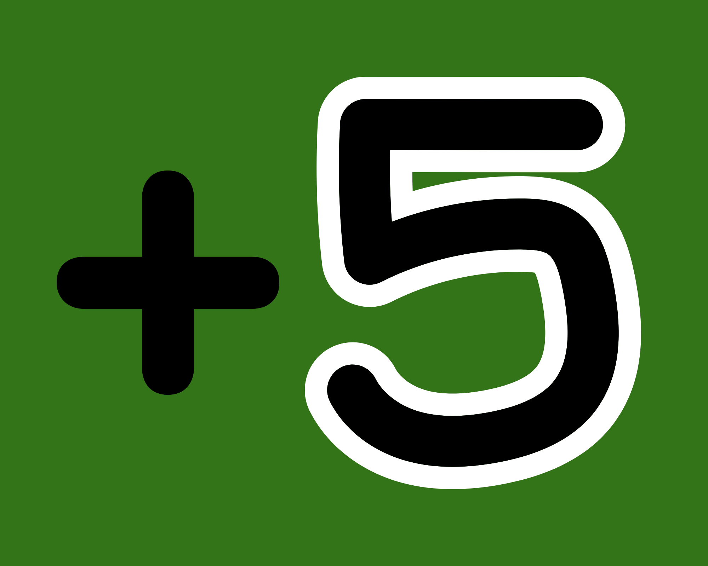
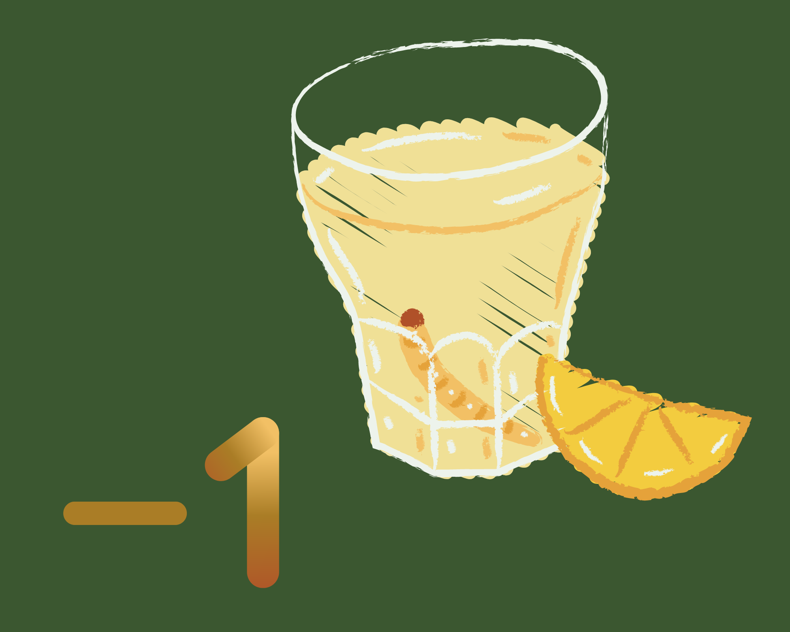
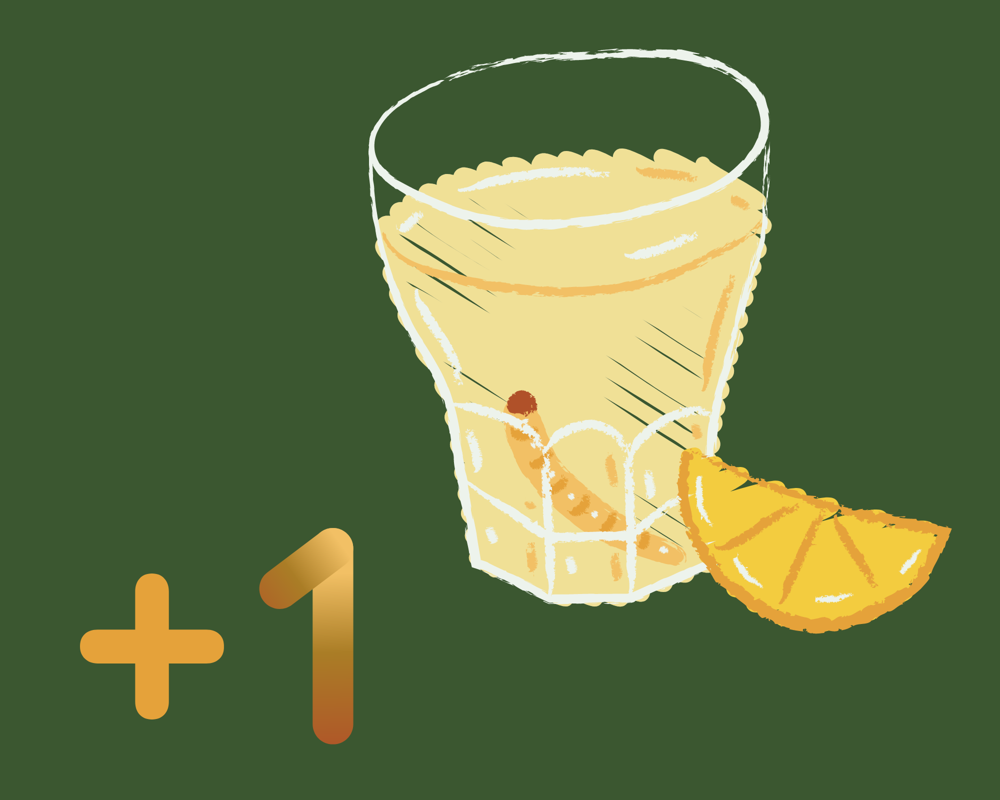
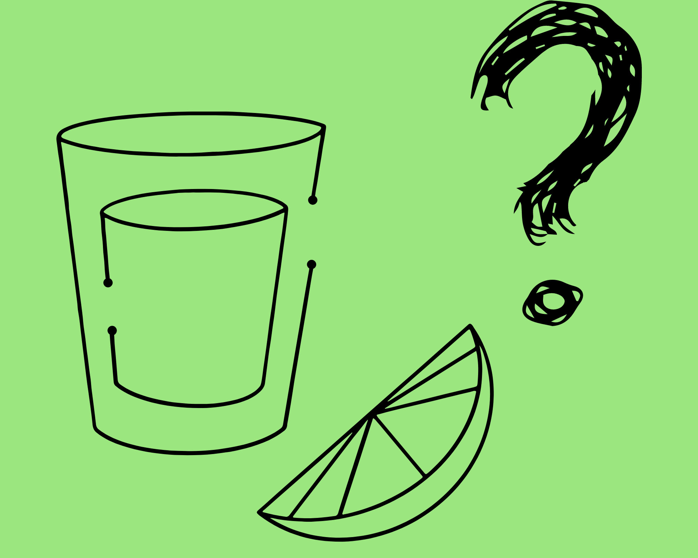
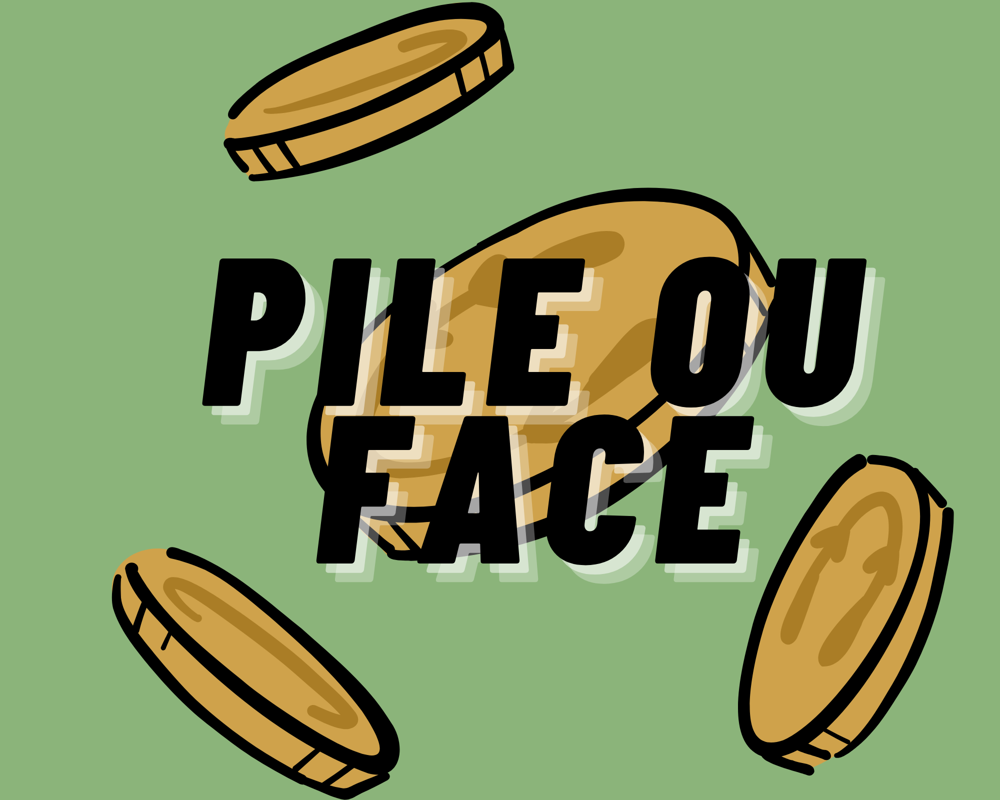
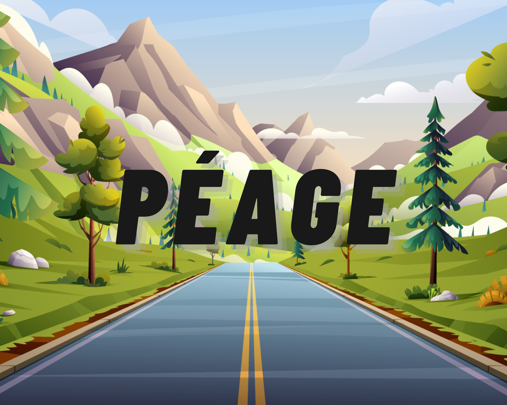

Si une case a un moins alors tu distribues le nombre de gorgées écrit.

Si une case a un plus alors tu bois le nombre de gorgées écrit.

ou

Si une case a un shot et qu'elle possède un moins, alors tu distribues. Si au contraire elle possède un plus tu bois

Shot mystère : Ton ami te crée un spécial shot.

Pile ou Face, si tu perds, tu bois !

Péage :
Péage est un jeu de cartes divertissant qui peut se jouer en tête-à-tête ou en groupe.
But du jeu du péage : Le but est de faire un aller-retour complet sur les cartes alignées. Si vous manquez de cartes avant la fin du jeu, c'est cul-sec ! Voici comment jouer :
Préparation : Alignez les cartes faces retournées. De temps en temps, ajoutez une carte face cachée - c'est un péage. Les cartes restantes sont mises de côté, faces cachées.
Longueur de la partie : Vous décidez de la longueur du jeu et du nombre de péages en fonction de votre envie de boire !
Jouer une carte : Pour chaque carte retournée, un joueur doit prédire si la prochaine carte sera "plus haute", "plus basse" ou "égale". Une nouvelle carte est alors tirée du paquet restant et placée sur la carte retournée.
Avancer ou reculer : Si la prédiction est correcte (par exemple, un As est sur la table, le joueur annonce "Moins" et retourne un Deux), le joueur avance d'une carte. Sinon, le joueur recule d'une carte et doit boire.
Rencontre avec un péage : Si un joueur tombe sur un "péage" en avançant ou en reculant, il doit boire et avancer/reculer d'une carte supplémentaire, selon la direction.